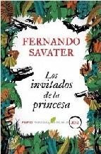
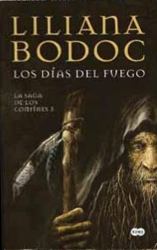
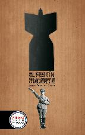

Tue, 27 Mar 2012 07:00:13 +0000
Los invitados de la princesa de Fernando Savater
Los invitados de la princesa de Fernando Savater
Los invitados de la princesa es el libro con el cual el escritor español Fernando Savater acaba de obtener el Premio Primavera de Novela 2012. Esta es una historia sobre intrigas, cocineros, vampiros y alguna que otra cabra loca. Promete ser una de las novelas más divertidas del año. La presidenta de Santa Clara, conocida [...]

Los invitados de la princesa es el libro con el cual el escritor español Fernando Savater acaba de obtener el Premio Primavera de Novela 2012. Esta es una historia sobre intrigas, cocineros, vampiros y alguna que otra cabra loca. Promete ser una de las novelas más divertidas del año.
La presidenta de Santa Clara, conocida popularmente como la Princesa, se ha propuesto que su pequeña república isleña se convierta en referencia cultural para el resto del mundo. Entonces, con este objetivo llama a escritores y artistas para celebrar un extraordinario Festín de la Cultura. Pero no todo sale como ella se lo había propuesto. Un desatinado volcán estorba sus planes y su nube de cenizas hace imposible que la anfitriona y sus invitados se reúnan en la isla.
Entonces entra en escena el joven periodista Xavi Mendia, enviado especial de Mundo Vasco, quien levanta acta de la extraña situación y se entera de las historias que cuentan unos y otras mientras todos esperan poder salir de allí: relatos de pasiones y terrores, misteriosos y fantásticos, en los que surgen las vacilaciones de la cultura contemporánea y hasta aparece la sombra de un vampiro.
Fernando Savater, filósofo y escritor español, nació en San Sebastián en 1947. Ejerció como profesor de Ética en la Universidad del País Vasco y hoy en día imparte clases en la Facultad de Filosofía de la Universidad Complutense de Madrid. Ha publicado muchos títulos, entre ensayos, obras de teatro y narrativa. En la actualidad es uno de los intelectuales de mayor prestigio y algunas de sus creaciones han merecido premios tan destacados como el Premio Nacional de Literatura y el González-Ruano de Periodismo.
Sun, 25 Mar 2012 07:00:45 +0000
Los días del Fuego (La Saga de los Confines III) de Liliana Bodoc
Los días del Fuego (La Saga de los Confines III) de Liliana Bodoc
Los días del Fuego marca el épico final de la trilogía La Saga de los Confines, con la que la escritora argentina Liliana Bodoc cautivó al público y a la crítica, y encantó a escritores de la talla de Ursula K. LeGuin. Nuevamente, el bien y el mal se enfrentan en su lucha por apoderarse [...]

Los días del Fuego marca el épico final de la trilogía La Saga de los Confines, con la que la escritora argentina Liliana Bodoc cautivó al público y a la crítica, y encantó a escritores de la talla de Ursula K. LeGuin. Nuevamente, el bien y el mal se enfrentan en su lucha por apoderarse de las Tierras Fértiles. Como si de un tablero de yocoy (juego de los Señores del Sol) se tratara, las piezas se mueven, los jugadores toman sus posiciones, y la partida puede definirse inesperadamente por un movimiento sorpresivo.
Molitzmós es el cruel rey del País del Sol, aliado de Misáianes, el Odio Eterno, que no dudará en deshacerse de él como si de un manto emplumado se tratara, en cuanto deje de serle necesario. Los sideresios y los soldados de Molitzmós se internan en la selva para capturar a los zitzahay que quedan, y que aprendieron a vivir en silencio. El astrónomo Bor pagará el castigo para salvar a su pueblo. Los husihuilkes siguen combatiendo a los enemigos que se les resisten pero, ¿por cuánto tiempo alcanzará su sangre?
Aparece en escena un nuevo personaje, la enigmática Acila, cuyos verdaderos planes permanecen en la sombra. Además, la lucha deja de estar limitada a las Tierras Fértiles, ya que en este tercer volumen asistimos a la resistencia que tiene lugar en el propio continente de Misáianes. Ningún volumen de la trilogía, como este, será tan desgarrador. Y ninguno, tampoco, se grabará como Los días del Fuego en la memoria y en el corazón de sus lectores.
Por último, vale la pena mencionar que recientemente ha salido a la venta en Argentina Relatos de los Confines, un nuevo libro de Liliana Bodoc donde reúne historias de las Tierras Fértiles acaecidas antes, durante y después de los hechos narrados por la trilogía.
Opinión personal: Los días del Fuego es un libro más extenso, más profundo y mucho más duro de los que lo precedieron. Con la bellísima prosa poética que identifica a toda la trilogía, con vueltas de tuerca que no dejan de sorprender a los lectores y con un mensaje de esperanza, Liliana Bodoc se consagra definitivamente con este tercer volumen. Y yo tengo un nuevo clásico para agregar a mi lista de favoritos. Definitivamente, un libro que vale la pena leer y releer.
Fri, 23 Mar 2012 07:00:39 +0000
El festín de la muerte de Jesús Díez de Palma
El festín de la muerte de Jesús Díez de Palma
La novela El festín de la muerte, del escritor español Jesús Díez de Palma, acaba de alzarse con el Premio Gran Angular 2012, en su 34° edición. Este libro fue elegido entre 94 relatos que se presentaron al certamen. El festín de la muerte es un libro ambientado en la Segunda Guerra Mundial, aunque de [...]

La novela El festín de la muerte, del escritor español Jesús Díez de Palma, acaba de alzarse con el Premio Gran Angular 2012, en su 34° edición. Este libro fue elegido entre 94 relatos que se presentaron al certamen.
El festín de la muerte es un libro ambientado en la Segunda Guerra Mundial, aunque de acuerdo con el autor, habla de la guerra en general, y la manera que tiene de irrumpir en la vida de las personas, sin distinción de edad, nacionalidad, sexo u ocupación, mostrando “cómo la guerra convierte la vida en una tragedia”, incluso para quienes aprietan el gatillo o lanzan las bombas. Sus protagonistas son polacos, rusos y españoles, y la narración tiene lugar entre 1939 y 1945, abarcando el conflicto en su totalidad.
Cuenta Díez de Palma que eligió la Segunda Guerra Mundial en lugar de otros conflictos más cercanos porque, incluso cuando ya hace 70 años que ha terminado, “aún está presente en todo el mundo”, además de destacarse porque se la considera una guerra inevitable, y hasta justa, por haber sido la victoria contra el terrible régimen fascista, “Pero una guerra es una guerra y es destrucción, así que aquí denuncio esos hechos”, explica Díez de Palma. A pesar de lo difícil de la temática, como otros trabajos del autor, (entre ellos El maletín del arqueólogo y La casa del indiano) el público para el que está pensado este libro es el juvenil.
Jesús Díez de Palma es escritor, profesor e historiador español, conocido tanto por su obra dedicada a la novela juvenil como por sus obras de divulgación.